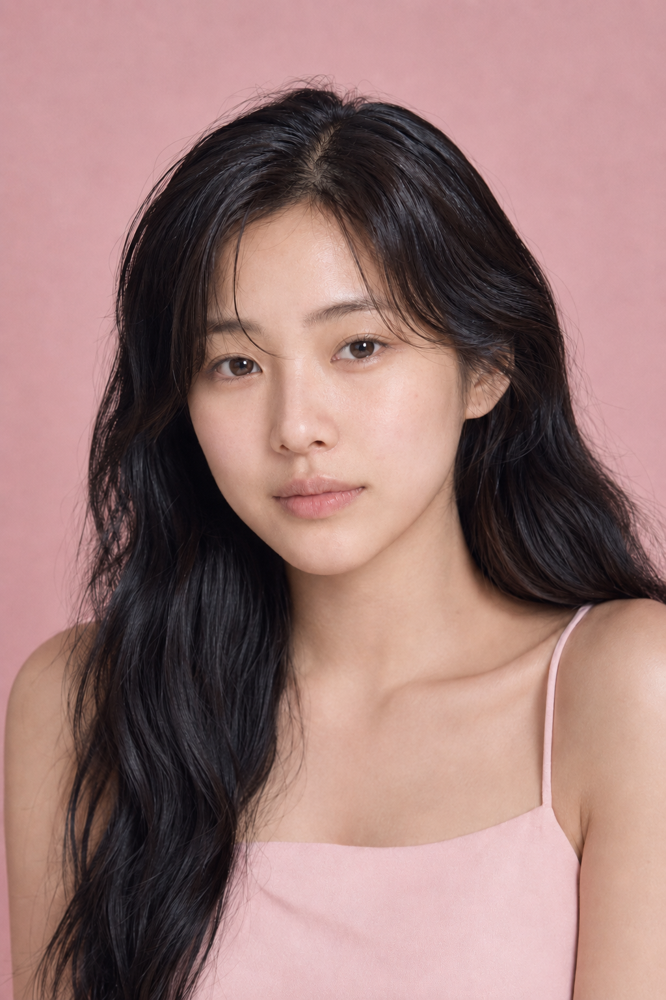
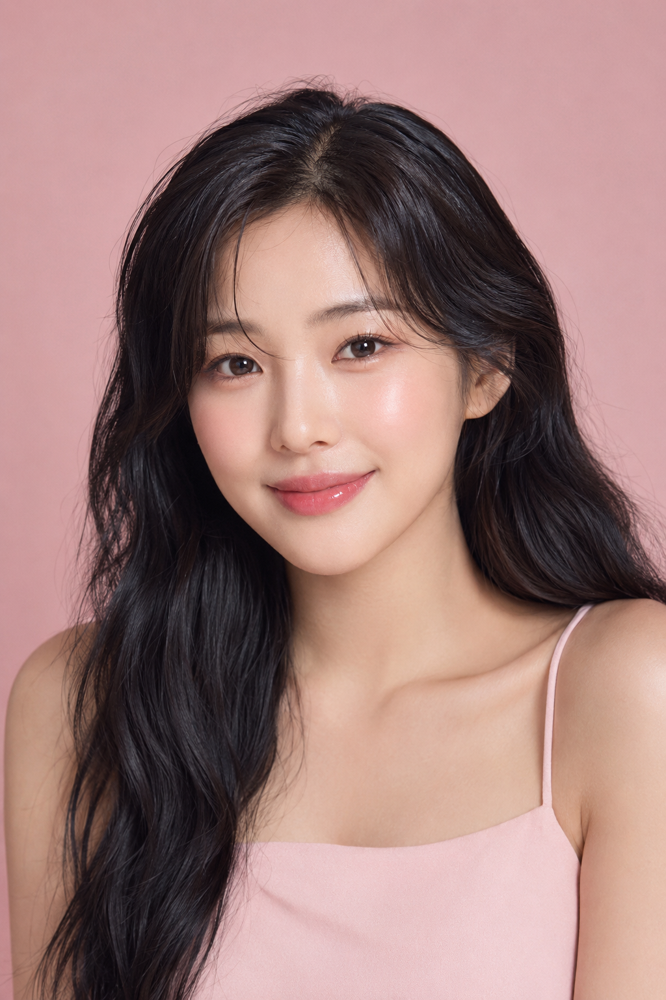

Personal Beauty Report
Soft Rose
Harmony
2026년 7월 15일 · AURA 분석
Beauty Profile
얼굴 무드 핵심값
AI Tone Reading
분석 요약
상·중·하안부의 흐름이 안정적이고, 얼굴 중앙의 부드러운 입체감이 맑은 인상을 만듭니다.
선명한 대비보다 피부의 투명감과 눈가의 가벼운 음영을 살릴 때 고유한 분위기가 가장 자연스럽게 드러나요.
S1 Measurement
얼굴 세로 비율
3D Facial Depth
입체 특성
유효 프레임 30/30 · ARKit 얼굴 메시 측정
3D 측정값 11개 자세히 보기
Face Geometry
얼굴 형태 비율
정면 2D 측정값 16개 보기
정면 사진 2D 실측 · 좌우는 본인 기준 · 비율은 얼굴 크기로 정규화
Personal Color
퍼스널 컬러 진단
밝고 맑은 피치 계열에서 피부의 투명감이 살아납니다. 탁하고 무거운 색보다 얇게 겹치는 로즈·코랄이 잘 어울려요.
AI Analysis
통합 분석 결과
Measurement Reading
광대와 턱 폭이 부드럽게 이어져요.
상·중·하안부 차이가 작고 안정적이에요.
눈꼬리와 눈썹선이 가볍게 올라가 있어요.
흰자와 홍채의 노출이 정면에서 고르게 보여요.
밝고 맑은 색에서 얼굴빛이 정돈돼요.
볼 중앙에 자연스러운 혈색이 있어요.
입술과 코 중심선의 흐름이 안정적이에요.
작은 좌우 차이는 표정 안에서 자연스럽게 보여요.
중앙부 입체감과 입술선이 매끄럽게 이어져요.
선의 존재감보다 피부의 빛과 중앙부의 은은한 볼륨이 먼저 느껴지는 얼굴이에요.
색은 맑게, 윤곽은 얇게. 눈가와 볼을 같은 로즈 온도로 연결하면 가장 자연스럽습니다.
Best Route
추천 메이크업

AFTERRecommended Look
투명한 소프트 로즈
피부의 맑은 톤은 유지하고 눈가·볼·입술을 같은 온도의 로즈로 얇게 연결한 룩이에요.
Makeup Tips
부위별 적용 포인트
볼 중앙은 얇게 비치게 두고 콧방울 주변만 정돈해 주세요.
현재 기울기를 살려 눈썹산을 높이지 않고 결만 정리해요.
눈꼬리를 길게 빼기보다 로즈 베이지 음영을 가볍게 연결해요.
앞광대 중심에서 바깥으로 넓고 투명하게 퍼뜨려 주세요.
입술선을 꽉 채우지 않고 중앙의 맑은 광을 남겨 주세요.
분석 결과는 AI 기반의 뷰티 가이드이며 개인차가 있을 수 있습니다.